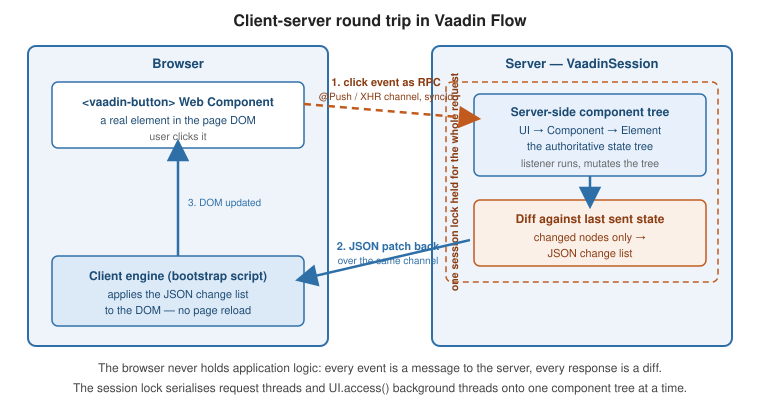

Architecture
|
This section documents the current Vaadin release line — Vaadin 24 LTS / 25.x, Java 17+, Spring Boot 3 / Jakarta EE 10 — as published at the official Vaadin documentation, which is the reference these pages are written and verified against. No specific patch version is pinned. Flow (server-side Java) is the authoring style used throughout, with Hilla / React shown where it differs; Vaadin 7 and the pre-Flow architecture appear only as migration contrast. This content was generated with the assistance of AI and should be verified against the official documentation before being relied on in production, since Vaadin ships major releases roughly twice a year and its ecosystem iterates. Practical Vaadin (Alejandro Duarte, Apress, 2021), Learning Vaadin 7, 2nd ed. (Nicolas Fränkel, Packt, 2013) and Vaadin 7 UI Design By Example (Alejandro Duarte, Packt, 2013) are listed in this section’s bibliography and were consulted while preparing these pages. None of them is the primary or main reference for the section: Practical Vaadin predates the current Vaadin 24/25 line, and the two 2013 books document the obsolete Vaadin 7 API — so on any discrepancy the official documentation at vaadin.com/docs wins, and the difference is noted. |
Vaadin Flow keeps the authoritative user interface as a tree of Java objects on the server and drives a matching set of Web Components in the browser through a thin client engine. This page describes that split and the runtime objects that hold it together, verified against How Vaadin Flow works and the Application Lifecycle reference.
Two halves: the server component tree and the client engine
You write views as Java classes. Adding a component nests a node in a server-side component tree whose root
is a UI; you never write HTML.
@Route("hello")
public class HelloView extends VerticalLayout {
public HelloView() {
TextField name = new TextField("Your name");
Button greet = new Button("Greet", e ->
Notification.show("Hello, " + name.getValue()));
add(name, greet); // tree: UI -> HelloView -> TextField, Button
}
}On the first request for that route the server sends an app shell page plus a small JavaScript client
engine. The engine builds the real DOM — a <vaadin-text-field>, a <vaadin-button> — and wires a DOM
listener on each element that has a server-side listener. A click is not handled in the browser: the engine
packages it as an RPC message, sends it to the server, the server runs the e → lambda against the live
Button object, and the resulting tree changes are sent back and applied to the DOM. No page reload happens.

The lower-level view of each node is the Element — see
The Element API and Web Components; this page stays at the component-tree level.
UI, VaadinSession, VaadinService, VaadinRequest
Four objects frame every request. Each has a static getCurrent() that is populated only while a request
thread (or a UI.access() block) is running.
UI ui = UI.getCurrent();
VaadinSession session = VaadinSession.getCurrent();
VaadinService service = VaadinService.getCurrent();
VaadinRequest request = VaadinRequest.getCurrent();
session.setAttribute("cartId", cartId); // per-user, survives across requests
ui.navigate(CheckoutView.class);VaadinService — one instance per deployment (per VaadinServlet). It is the entry point that creates
sessions, holds the DeploymentConfiguration, and runs the chain of RequestHandler objects and the
VaadinServiceInitListener extensions. It lives for the servlet’s lifetime. The servlet subclass is
VaadinServletService.
VaadinSession — one instance per user, wrapping that user’s HttpSession. It owns every UI the user has
open, the single session lock described below, and any session-scoped attributes. It is created on the first
request and destroyed when the HTTP session is invalidated or times out; hook both ends with
SessionInitListener / SessionDestroyListener.
UI — one instance per open tab or window, and the root of that tab’s component tree. It is created on that
tab’s first request, after which UI.init(VaadinRequest) runs, and it expires after three missed heartbeats
(a heartbeat every 5 minutes by default, so roughly 15 minutes idle). UI.getCurrent() returns the UI bound
to the current thread.
VaadinRequest — a framework-neutral wrapper over one incoming HttpServletRequest (VaadinServletRequest
is the servlet-backed implementation). It is valid only for the duration of that one request; never store a
reference to it.
|
Vaadin 7 already had |
The state tree, diffing and the sync channel
Every server-side mutation — add(…), setText(…), a style change, an attribute — is recorded as a
pending change on the tree rather than pushed to the browser immediately.
Div box = new Div();
box.setText("saved");
box.getStyle().set("color", "green");
box.setVisible(false);
// nothing on the wire yet -- three pending changes on this UI's treeWhen the request thread finishes, Flow diffs the UI tree against the last state it sent to that UI and
serialises only the changed nodes as a JSON change list. The client engine applies that list to the DOM.
Messages in each direction carry a strictly increasing syncId (and the client’s clientId) so both sides
can detect a lost or reordered message; if the client sees a gap it asks the server to resynchronise and the
whole DOM is rebuilt from current server state. This protocol is documented in
Server-to-Client Communication.
The transport is the same channel used by Server Push: with @Push enabled it is a
WebSocket (falling back to XHR / long polling), otherwise each user interaction is a plain XHR POST to the
UIDL request handler and the diff comes back in that response.
The thread model: one session lock and UI.access()
All of a session’s server-side work is serialised behind one lock, held for the whole of each request (Session Lock and RPC Invocation Listeners). Because a request thread already holds that lock, listener code can touch components freely without any synchronisation of its own — two clicks from the same user can never run concurrently.
// Request thread: session already locked, UI.getCurrent() is set.
refreshButton.addClickListener(e -> grid.setItems(service.loadOrders()));A thread you start yourself is different: it holds no session lock, and UI.getCurrent() on it is null.
Calling component methods from such a thread races the request threads and corrupts the tree. Capture the UI
reference while still on the request thread, do the slow work off the lock, then hand the UI update back
through UI.access(Command).
UI ui = UI.getCurrent(); // captured on the request thread
new Thread(() -> {
List<Order> data = slowReportQuery(); // runs without holding the lock
ui.access(() -> grid.setItems(data)); // re-acquires the lock, sets current instances, runs
}).start();UI.access(Command) enqueues the command, acquires the session lock when it is free, sets UI.getCurrent() /
VaadinSession.getCurrent() for the duration, runs the command, and — with @Push in the default
AUTOMATIC mode — pushes the resulting diff to the browser. UI.accessSynchronously(Command) does the same
but blocks the caller until it runs and does not trigger a push. If the UI has been detached in the
meantime, access throws UIDetachedException, so guard long-running tasks. VaadinSession.access(Command)
is the session-level equivalent when there is no single UI in view.
Request handling, the bootstrap and VaadinServlet
Every request reaches a VaadinServlet mapped to /*. On a plain servlet container you register it:
@WebServlet(urlPatterns = "/*", asyncSupported = true)
public class ApplicationServlet extends VaadinServlet {
}With Spring Boot you register nothing. The com.vaadin:vaadin-spring-boot-starter auto-configuration
contributes a VaadinServlet (as SpringServlet) mapped to the root context, wired to the Spring
ApplicationContext so views and listeners can be beans — see
Spring Boot Integration. You only add a routed view:
@Route("")
public class MainView extends VerticalLayout {
public MainView() {
add(new H1("Dashboard"));
}
}Inside the servlet, VaadinServletService.handleRequest locates the VaadinSession, locks it, and runs an
ordered chain of RequestHandler objects: the bootstrap handler for a first page load, the UIDL handler for
the RPC/diff channel, static-resource handlers, and so on. The first handler to consume the request wins; the
lock is released when the chain returns.
The bootstrap response for a route is the app shell: an index.html (yours from frontend/index.html, or
the framework default) with the <base href> and the client-engine bundle injected. Customise it by
implementing AppShellConfigurator on a single class and overriding configurePage(AppShellSettings), or with
@Meta, @Viewport, @PWA and @Push on that same class;
Modifying the Bootstrap Page covers
the IndexHtmlRequestListener hook for document-level edits.
For cross-cutting setup, implement
VaadinServiceInitListener (a
Spring @Component, or a line in META-INF/services). That is also where you attach SessionInitListener and
UIInitListener to run code for each new session and each new UI.
public class BootstrapCustomizer implements VaadinServiceInitListener {
@Override
public void serviceInit(ServiceInitEvent event) {
event.getSource().addUIInitListener(uiEvent -> {
UI ui = uiEvent.getUI();
ui.addBeforeEnterListener(new AuthGuard());
});
}
}See also
-
Getting Started — installing the starter and writing the first routed view.
-
The Element API and Web Components — the
Elementlayer under the component tree. -
Server Push —
@Push, push modes and transports for the sync channel. -
Spring Boot Integration — how the starter wires
VaadinServletinto Spring.